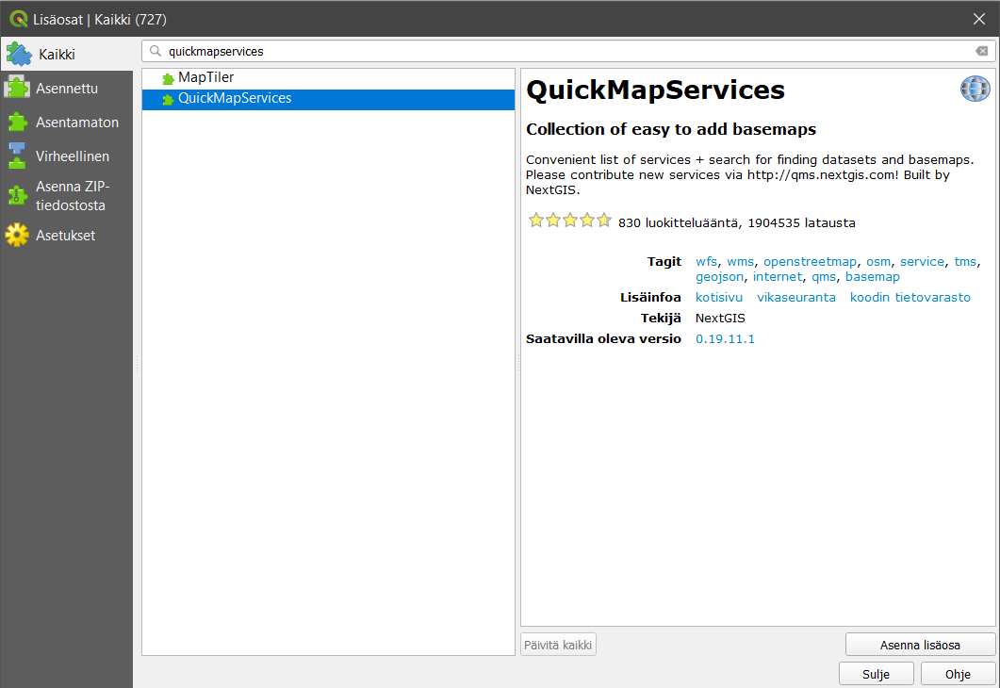
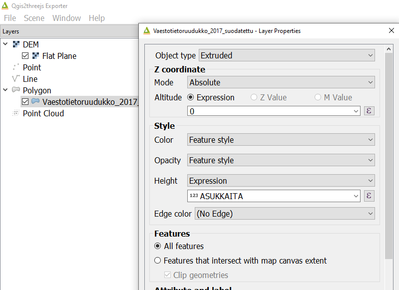
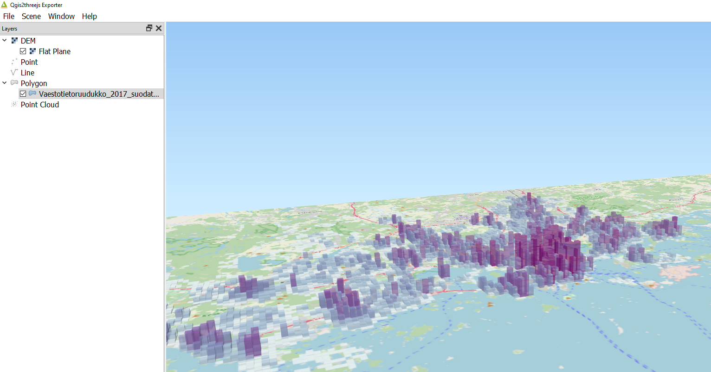
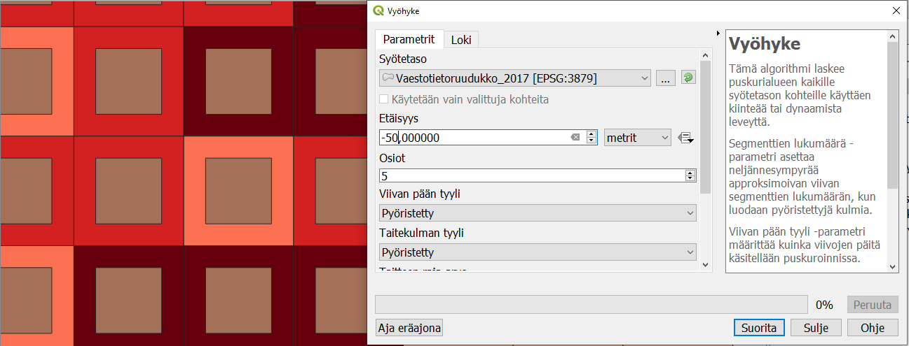

11 Harjoitus 10: QGISin lisäosat
11.1 Harjoituksen sisältö
Harjoituksessa tutustutaan QGISin monipuolisiin lisäosiin ja opitaan käyttämään muutamaa keskeistä lisäosaa.
11.2 Harjoituksen tavoite
Opiskelijalla tietää perusasiat QGISin lisäosien käytöstä ja osaa myös hyödyntää niitä.
11.3 Arvioitu kesto
40 minuuttia.
11.4 Valmistautuminen
Avaa uusi QGIS-projekti (Projekti > Uusi) ja tallenna se nimellä “QGIS-harjoitus 10”. Lataa projektiin seuraavat aineistot:
..kurssihakemisto/MML/Korkeusmalli_2m/L4133B.asc
..kurssihakemisto/HSY/HSY_vaestotietoruudukko/HSY_vaestotietoruudukko_2019
11.5 Lisäosien hallinta
Lisäosia lisätään käyttöön päävalikosta Lisäosat > Hallitse ja asenna lisäosia… -valikon kautta. Valitse Asennettu-välilehti ja saat esille kaikki asennetut lisäosat. Huomaa, että suurinta osaa niistä ei ole aktivoitu. Lisäosien aktivointi lisää erilaisia valikkoja ja paneeleja QGISin käyttöliittymään. Siksi on hyödyllistä piilottaa ne joita ei käytetä.
11.6 QuickMapServices
QuickMapServices-lisäosan kautta saat QGISin karttaprojektiin verkosta erilaisia kuten OpenStreetMap tai Maanmittauslaitoksen taustakarttasarjat tai ortoilmakuvat. Avaa Lisäosat > Hallitse ja asenna lisäosia… > Kaikki ja etsi QuickMapServices tekstillä:

Paina vielä Asenna lisäosa ja paina sen jälkeen Sulje. Uusi valikko tulee päävalikon Verkko alle. Valitse Verkko > QuickMapServices > OSM > OSM Standard. Karttaikkunassa on nyt OpenStreetMap taustakarttana. Järjestä tasot siten, että väestöaineisto on hyvin näkyvissä. Voit myös piilottaa korkeusmalliaineistot, jos ne haittaavat visualisointia. Kokeile lisäksi muita taustakarttoja.

11.7 Qgis2threejs
Lisää samaan tapaan Qgis2threejs-lisäosa. Tämä lisäosa mahdollistaa nopean kolmiulotteisen visualisoinnin luomisen web-selaimelle käyttäen threejs-kirjastoa. Lisäosan valikko tulee myös Verkko-valikkoon. Avaa Qgis2threejs Exporter ja valitse DEM Layer -valikosta Flat Plane. Valitse sen jälkeen Polygon-kohdan alta väestötietoruudukkoaineisto ja tuplaklikkaa sitä avataksesi asetukset. Aseta Z-coordinate -kohdan Mode-asetukseksi Absolute ja Height-arvoksi asukkaita-kentän arvo.

Voit esikatsella 3D-mallia lisäosassa ja halutessasi tallentaa sen HTML-muotoon valikosta File > Export to web.

11.8 Qgis2web
Qgis2web-lisäosa on helppokäyttöinen lisäosa verkkokartan luomista varten. Sillä voi tuottaa verkkokarttoja hyödyntäen Leaflet- tai OpenLayers-kirjastoja. Qgis2web on hyödyllinen apuväline näiden kirjastojen opetteluun ja verkkokarttajulkaisujen tekemiseen. Asenna Qgis2web-lisäosa ja avaa se valikosta Verkko > Qgis2web > Create web map. Valitse väestötietoruudukko-aineiston kentille Popup fields -kohdan alta Inline label, ja klikkaa Update preview. Kun kartta on päivittynyt, klikkaa ruudukkoa.

Vaihda Appearance-välilehdelle ja muuta asetukset kuvan mukaisesti:
Paina lopulta Export tallentaaksesi kartan HTML-tiedostoon. Tiedosto aukeaa automaattisesti selaimelle. Kokeile verkkokartassasi etsiä osoitteita ja käyttää mittaustyökalua.
11.9 Prosessointityökalut
Iso joukko työkaluja on saatavilla Prosessointi-valikon kautta. Prosessointityökalut on lisäosa, joka on oletuksena aktivoitu QGISiin. Sillä on oma paikka päävalikossa Prosessointi > Työkalut. Työkalut tulevat esiin paneelina karttaikkunan oikealle puolelle. Etsi työkalujen joukosta Vyöhyke-työkalu (= Buffer). Voit kirjoittaa Etsi…-kenttään sanan “buffer”, jolloin työkalu löytyy helposti. Avaa työkalu, valitse lähtötasoksi HSY_vaestotietoruudukko_2019 ja aseta Etäisyys-kenttään -50 metriä. Pidä puskuroinnin työkalun tulos väliaikaisena tiedostona tai tallenna se pysyväksi.

Tuloksena on negatiivinen puskuri, eli alkuperäistä pienempi ruudukko. Prosessointityökalujen kautta pääse käyttämään työkaluja monesta muusta ohjelmistoista (niiden ohjelmistokirjastot täytyy tällöin olla asennettu koneeseen). Muun muassa GRASS-, GDAL-, Orfeo Toolbox- ja SAGA-työkalut ovat saatavilla.
Jos sinulle jää aikaa, käy läpi muita lisäosia ja tarkastele mitä työkaluja sieltä löytyy, jotka voivat auttaa sinua omassa työssäsi.
Kun olet valmis, tallenna projektitiedosto kurssihakemistoon pikanäppäimellä CTRL + T (englanninkielisessä QGISissä CTRL + S) tai päävalikosta Projekti > Tallenna.
Psst! Koulutuksen jälkeen saat henkilökohtaista tukea Gispon tukipalvelusta. Lähetä kysymyksesi tai kommenttisi osoitteeseen tuki@gispo.fi!